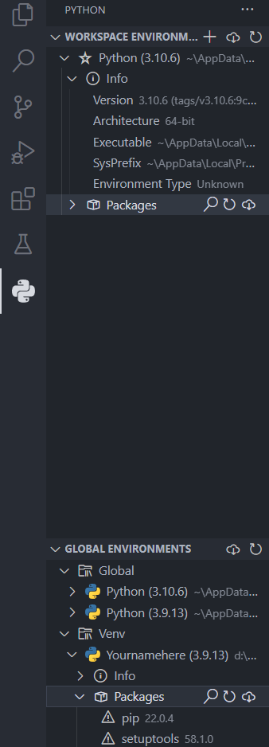

3.2 Windows 配置虚拟环境
Windows下常调用的目录
在Windows系统下涉及到多版本Python时，常常需要手动指定Python的位置，以下位置则尤为重要。
# 非虚拟环境下
# 以Python3.9为例
# Python默认安装位置
C:\Users\账户名\AppData\Local\Programs\Python\Python39\python.exe
# 根环境pip默认安装位置
C:\Users\账户名\AppData\Local\Programs\Python\Python39\Scripts\pip.exe
# 虚拟环境下
# Python位置
Yournamehere\Scripts\Python.exe
# pip位置
Yournamehere\Scripts\pip.exe
举个例子：在Windows上配置虚拟环境
在看接下来的内容时，注意账户名，python版本，环境名都需要自己修改。
代码的具体意义不再解释，可以自行GPT
1.建立环境
在上一级目录下打开终端（cmd或Powershell），执行以下命令
& "C:\Users\Steven Lin\AppData\Local\Programs\Python\Python39\python.exe" -m venv Yournamehere
终端实际显示
PS D:\Coding> & "C:\Users\Steven Lin\AppData\Local\Programs\Python\Python39\python.exe" -m venv Yournamehere
无输出内容，会在打开终端的目录创建一个名为Yournamehere的文件夹
2.检查环境
在.\Scripts目录下打开终端
输入：python
返回：系统环境变量中的Python
输入：.\python
返回：本虚拟环境中的Python版本
输入：pip list
返回：系统环境变量中所配置Python的根环境（根pip）内的第三方库
输入：.\pip list
返回：本虚拟环境第三方库（应该非常非常少）
为了防止混淆，非常不建议在 外环境 安装虚拟环境库包
3.启动环境（Windows版）
在.\Scripts目录下打开终端
输入: .\activate
返回：(Yournamehere) PS D:\Coding\Yournamehere\Scripts>
代表成功进入环境，前边的括号是虚拟环境名
4.安装第三方库
在虚拟环境内，使用指令安装第三方库
例如，Jupyter Notebook就可以在每个环境下分别安装
pip install 库名称==版本号
5.退出虚拟环境
在虚拟环境内，使用以下指令退出虚拟环境
deactivate
6.备注
在vscode中，可以使用Python Environment Manager来确认自己工作的路径，并使用切换运行具体文件的Python环境（版本）。
 2.2.1 Python Environment Manager